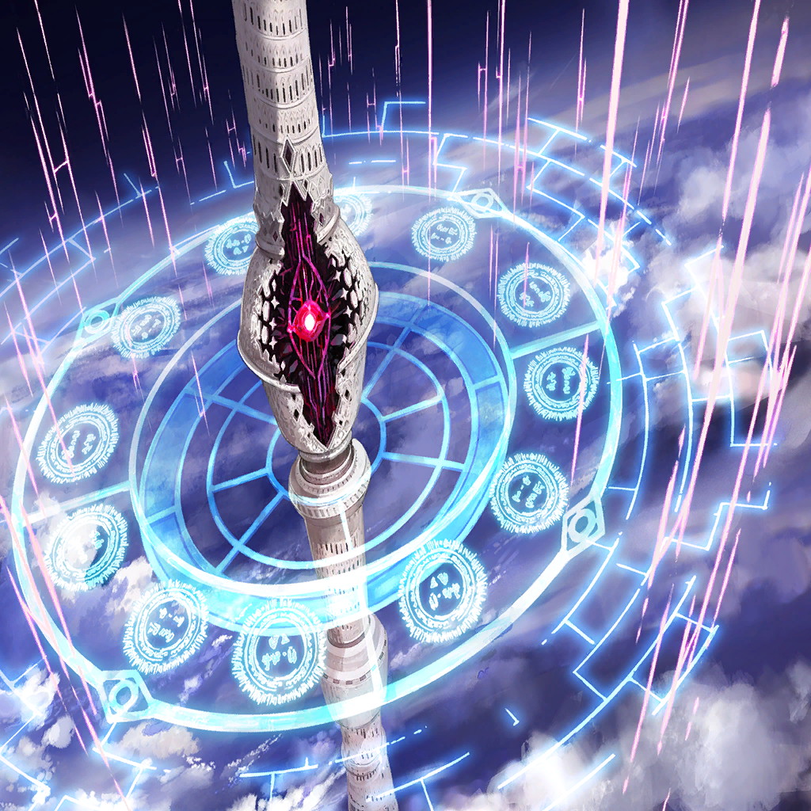
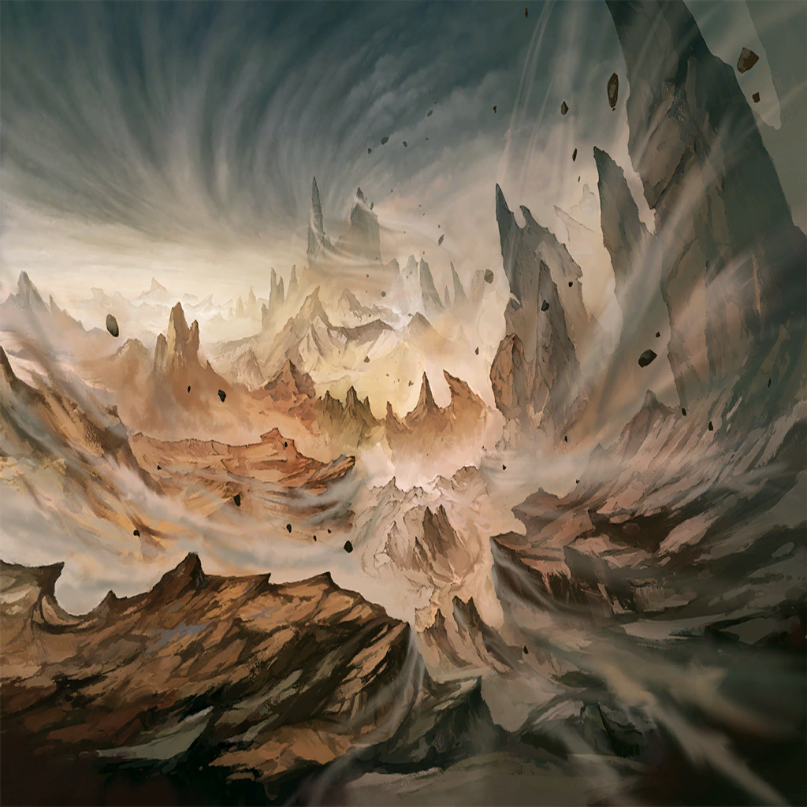
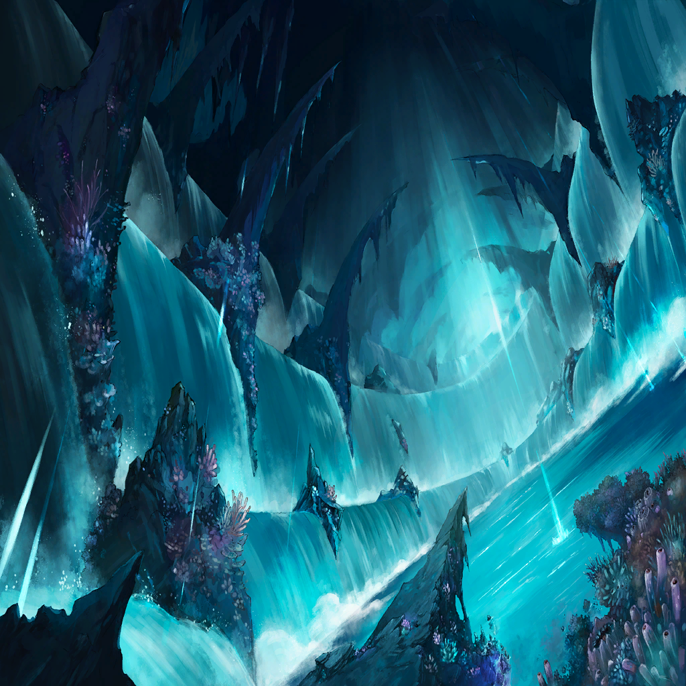

|
|
| 女の声 |
この樹を、セフィロンと名づけましょう |
| 女の声 |
竜の血を注ぎ育てられた大樹
創世を為す子が、
いずれこの土壌から産まれるように |
| 女の声 |
この子と繋がったヒトは、
より強く育つことでしょう |
| 神狼 |
ヒトと竜の混血
自然との繋がりを現す、
“セフィラ”を持ち生まれる者たち |
 |
| 神狼 |
本当に、そんなものが必要なのか |
| 女の声 |
わかりません
だからこそ、遺すのです |
| 女の声 |
次に選択肢が訪れる時には、
もう私は生きてはいないのですから |
| 神狼 |
…そうか、お前も死ぬのか。マティア |
| マティア |
当たり前でしょう。人間なのですから |
| 神狼 |
お前は、
いつまでも生きているものと思っていた |
| マティア |
どれ程強くとも、偉くとも
人間の寿命などそんなものです
ああ、でも―― |
| マティア |
少し、物足りない人生ではありましたね
この時代には、戦う理由がなさ過ぎた |
| マティア |
理由なき力は、どうしても鈍ります
強い目的。折れぬ心…そういったものが
どれほど、この身を高めるものか |
| マティア |
知りたかったですね、できれば |
| 神狼 |
…相も変わらず、戦いか |
| マティア |
それが私の喜びですから
ああ、そうですね… |
| マティア |
もし何か奇跡が起こって、もう一度
誰かの為に戦う機会を得たのなら |
| マティア |
それがどんな理由であれ、
私は喜んで血を流すでしょう |
| 神狼 |
そのような未来が、訪れないことを祈る |
| マティア |
…友人の願いを無下にしすぎでは。貴方 |
| 神狼 |
………… |
|
|  |
| 罪獣ルシファー |
………… |
| マティア |
…ああ、もう終わりですか |
| マティア |
竜界…今は神殿というのでしたか？
たしかに強力ではありますが、まあ |
| マティア |
扱う者がこの有り様では、意味がない |
| 罪獣ルシファー |
…なぜ、だ |
| マティア |
はい？ |
| 罪獣ルシファー |
このままでは、世界は穢れに呑まれ滅ぶ
それは貴様も…
いや、貴様だからこそわかっているはず |
| 罪獣ルシファー |
セフィラの女よ
なぜ貴様は、ウロボロスに与するのだ… |
| マティア |
…どうせ |
| マティア |
どうせ死ぬなら、
戦場で死にたかったのです。私は |
| 罪獣ルシファー |
………… |
| マティア |
くだらない恨み言でした
さようなら、オピネウス |
| マティア |
終わりましたよ、ウロボロス |
| ウロボロス |
…ふむ |
| マティア |
何か？ |
| ウロボロス |
あの罪獣、まだ意志が残っているな
この後の人間たちとの戯れに
また水を差されては面倒だ |
| ウロボロス |
ルシファー。うぬのマギル、
別のモノで上書きさせてもらおうか |
| マティア |
これは、私たちが創り出された時と同じ…
まだ手駒を増やすつもりですか |
| ウロボロス |
無駄ではある
だが、ヒトはそんな行為にすら
意味を見出すのだろう？ |
| マティア |
………… |
| ウロボロス |
そうだな、あの者がいいだろう
我が記録の中で、
もっとも多くの人間を殺した男―― |
| ウロボロス |
確か、名は…イグナシオと言ったか |
| ？？？ |
おや、これは懐かしい顔ぶれだ
なんだい、
地獄の釜の蓋でも開いたのかな？ |
| マティア |
…最悪の人選です |
| ？？？ |
とはいえ、役目はきちんと果たそう
ただの一度も手抜き仕事をしたことがない
というのが、私の唯一の自慢だからね |
|  |
| アンデクス |
我が憤怒は、正義の怒り。故に―― |
 |
| アンデクス |
（そう――あの時の斬撃
あれこそが、我が生涯最高の一撃だ） |
| アンデクス |
（俺は今、ここで――） |
| アンデクス |
（あの一撃を、再現する…！） |
|
| メサルティム |
――ほう |
| アンデクス |
我が一刀に、
この怒りのすべてを込める――!! |
|
|

ダフネ |
…っ、今!! |
| アンデクス |
通った――!! |
| メサルティム |
…はは、私の護りを切り裂くとは！ |
| メサルティム |
その力、覚えがあるぞ
塔の上であの男が振るった力
――錬金術というやつか |
| アンデクス |
…？ いや、違うだろ
別にニムルみたいに
風や氷を出せるわけでもなし |
| アンデクス |
俺はただ、
俺にでき得る全力で
渾身の剣を振るっただけだ |
| メサルティム |
…自らの力の源泉を、
当人が理解していないとは |
| メサルティム |
だが、お前たちが脅威であることに
変わりはない
だからこそ―― |
| メサルティム |
こちらも、戦い方を変えるとしよう |
|  |
| アンデクス |
な…に？ |
ダフネ |
これは、レヴィアタンの神殿…!?
アンデクスさん！ |
| メサルティム |
今の私は、ウロボロスより
その力の一部を預けられている |
| メサルティム |
果てなき海に沈むがいい |
ダフネ |
“我らは嫉妬の罪を抱く者――” |
ダフネ |
“この身は盾
万象を塞ぎ挫く銀の障壁――！” |
| メサルティム |
これを防ぐか…！ |
| アンデクス |
く…っ |
| アンデクス |
（押し切れん…！
例え剣が通じても、
扱うマギルの規模が違い過ぎる） |
| アンデクス |
まるで罪獣を相手にしてるようだな、
これは！ |
ダフネ |
そう、ですね
でも、私たちには…仲間がいます |
| メサルティム |
む？ これは… |

メラ |
おーし、捕縛完了！
この一帯のマギルの把握に
時間かかっちゃったけど… |

ニクス |
ダフネ！ アンデクス！
僕たちが抑えている、今のうちに！ |
| アンデクス |
ああ――!! |
| メサルティム |
時空操術か。懐かしいやり口だ |
メラ |
え…？ |
| メサルティム |
結局、その原理はよくわからなかったが
この身の時が遅くなったのなら、
その分速く動けばいい…！ |
| アンデクス |
ガッ…!? |
| アンデクス |
自分をマギルの爆発で、
吹き飛ばして突撃だと…!?
この女、砲弾か何かか…！ |
| メサルティム |
竜の鱗を砕くには、
これくらいの無茶が必要でな… |
| メサルティム |
さあ、お前たちの限界を見せてみろ…！ |
| メサルティム |
なに、お前たちならば乗り越えられるさ
私はそれを…信じている!! |
| アンデクス |
ッ、勝手なことを…！ |